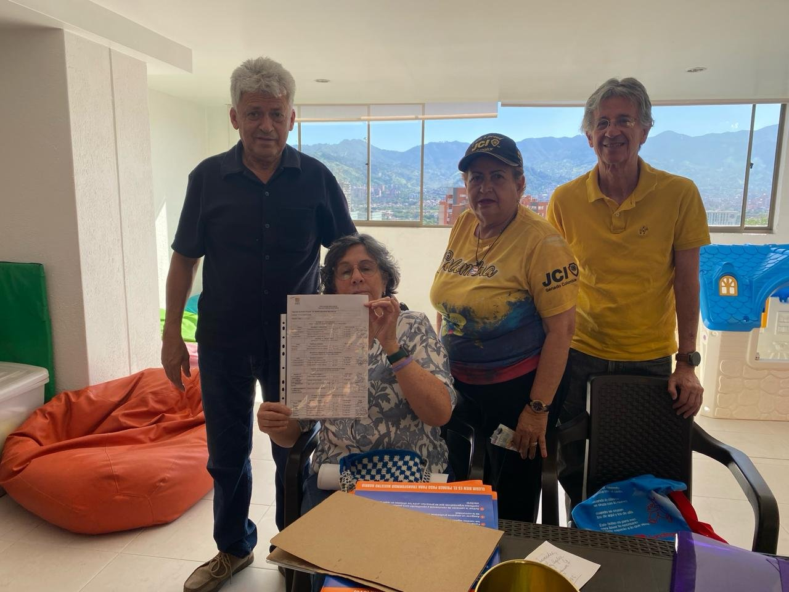

Nuestra historia, nuestra identidad y el marco legal que nos rige.
Somos los habitantes de San Diego Sur organizados para sacar adelante nuestro sector. Nuestra Junta nació de una idea sencilla: cuando los vecinos nos unimos, logramos lo que ninguno consigue por separado.
El sábado 9 de mayo, en el Auditorio 1 del piso 11 de la Torre Norte del Centro Comercial San Diego, se aprobó la constitución de la Junta de Acción Comunal del San Diego Sur. Se leyeron los estatutos, se conformó el Tribunal de Garantías, se nombraron dignatarios ad hoc y se abrió el libro de afiliados.
Nada de esto ocurrió por azar. Fue posible gracias al trabajo persistente del Comité de Impulso, el acompañamiento de la gestora territorial de Participación Ciudadana y el respaldo de Asocomunal 10.

Los vecinos que hicieron posible el nacimiento de nuestra Junta. Su trabajo persistente abrió el camino que hoy recorremos.
Ser una Junta de Acción Comunal líder, participativa, transparente y comprometida con el desarrollo integral de la comunidad, reconocida por promover la unión, la convivencia, la participación ciudadana y la gestión de proyectos que contribuyan al bienestar y mejoramiento de la calidad de vida de sus habitantes.
Representar y trabajar por los intereses de la comunidad mediante la participación activa de sus habitantes, promoviendo la organización comunitaria, la gestión de recursos, la ejecución de proyectos sociales y el fortalecimiento de la convivencia, con principios de transparencia, solidaridad, democracia y compromiso colectivo.
Los valores fundamentales que orientan las actuaciones de la Junta de Acción Comunal.
Actuar con honestidad, claridad y responsabilidad en la administración de los recursos y la toma de decisiones.
Fomentar la intervención activa de los afiliados y habitantes en las decisiones y actividades comunitarias.
Promover el apoyo mutuo, la cooperación y el trabajo colectivo para beneficio de toda la comunidad.
Cumplir los compromisos y funciones adquiridas, procurando siempre el bienestar común.
Garantizar decisiones participativas, respetando las opiniones y los derechos de los integrantes de la comunidad.
Reconocer la dignidad, las diferencias y los derechos de todas las personas.
Trabajar con dedicación y sentido de pertenencia por el desarrollo y progreso de la comunidad.
Promover la igualdad de oportunidades y el acceso justo a los beneficios y proyectos comunitarios.
Fortalecer las relaciones comunitarias mediante el diálogo, la tolerancia y la resolución pacífica de conflictos.
Impulsar la colaboración entre directivos, afiliados, instituciones y habitantes para alcanzar objetivos comunes.
Redacción institucional base, armonizada con los estatutos aprobados y la Ley 2166 de 2021.
Documentos que rigen el funcionamiento de la Junta.
Ser una Junta de Acción Comunal líder, participativa, transparente y comprometida con el desarrollo integral de la comunidad, reconocida por promover la unión, la convivencia, la participación ciudadana y la gestión de proyectos que contribuyan al bienestar y mejoramiento de la calidad de vida de sus habitantes.
Representar y trabajar por los intereses de la comunidad mediante la participación activa de sus habitantes, promoviendo la organización comunitaria, la gestión de recursos, la ejecución de proyectos sociales y el fortalecimiento de la convivencia, con principios de transparencia, solidaridad, democracia y compromiso colectivo.
Fortalecer el desarrollo social, comunitario y participativo del territorio mediante la organización de sus habitantes, la gestión de iniciativas y proyectos, la defensa de los intereses colectivos y la promoción de espacios de participación democrática que contribuyan al bienestar y la calidad de vida de la comunidad.
Redacción institucional base, armonizada con los estatutos aprobados y la Ley 2166 de 2021.